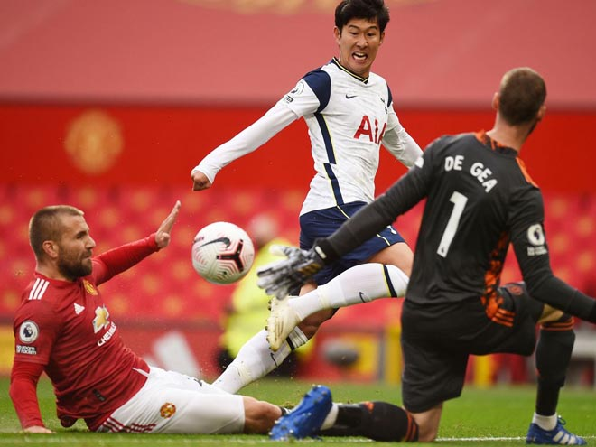

Bước ngoặt quan trọng nhất khiến MU thua thảm Tottenham 1-6, đó là chiếc thẻ đỏ của Anthony Martial. Và dĩ nhiên, đây là đề tài được HLV Ole Gunnar Solskjaer nhắc đến nhiều nhất trong buổi họp báo.
Nhà cầm quân người Na Uy chia sẻ với truyền thông Anh: "Cảm xúc của tôi thì hơi lẫn lộn. Thật mừng vì Martial không nằm lăn ra sân sau pha va chạm đầu tiên với Lamela. Nếu không thì có lẽ Lamela mới là người nhận thẻ đỏ. Cậu ấy đã thúc tay vào cổ Martial. Thật sự không nên làm thế. Martial cũng sai khi có hành động trả đũa".

| Tên Sinh Viên | Điểm Thi | Địa Chỉ |
|---|---|---|
| Nguyễn Đình Hướng | 22 | Tiên Phương |